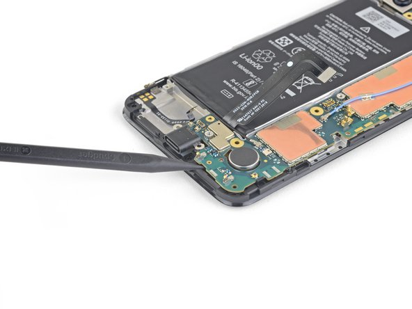
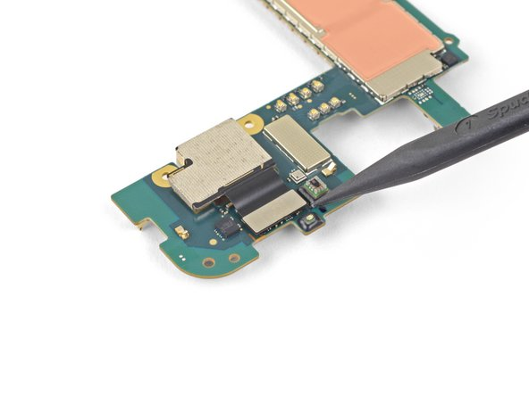
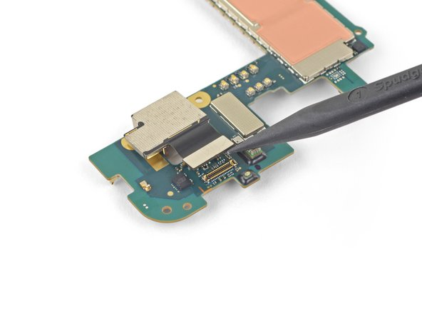

Diagnose an Android camera and service its module
Separate focus, lens-window, app and rear-camera faults with repeatable photos. Follow the Pixel 4a module path only if the evidence calls for it.
Use any Android phone you own, its ordinary camera app, a sheet of small printed text, a clean microfibre cloth and daylight or a fixed lamp. The internal photos and replacement procedure are specifically for the Google Pixel 4a. Do the software and optics checks first.
Do front and rear cameras fail the same way?
The outer lens window protects a small module with its own lens assembly, image sensor and flex to the mainboard. On a multi-camera phone the app may switch modules automatically with zoom, light or focus distance. For comparisons, record the selected camera and zoom, use repeatable light and keep the same subject and distance. On the Pixel 4a select the front camera or rear 1× view.
Remove the case or add-on lens protector if present. Look sideways into the protective glass for cracks, haze or contamination. Clean the outside with a clean cloth. Keep the phone still and capture small print in good light at two distances that the selected module can focus at, starting about half a metre away. Tap the same target where tap focus is supported.
Compare preview with the saved file. Switch front to rear, record a short clip on each and test the flash in a supported rear photo mode. A sharp saved frame with a smeared preview points you toward a different check from a smear in every file.
If the app crashes or the rear view stays black, record the symptom after a restart. Try the manufacturer’s test or another trusted app already installed, with camera permission granted. Follow Google’s camera troubleshooting if failure continues. On a Galaxy with Samsung Members, locate its camera diagnostic; the menu layout varies by model and software. Preserve the owner’s data and get permission before changes that might affect it.
Google’s Pixel camera troubleshooting sequence · Samsung’s camera and microphone diagnostics.
| Observation | Next check |
|---|---|
| Fixed flare on one lens that changes with the light angle | Inspect the outer window and case before opening the phone. Compare photos after cleaning. |
| Sharp at medium distance, blurry only very close | Move back and see when focus returns. Compare with the model’s expected focus behaviour before suspecting its actuator. |
| Rear shows black in two apps after restart. Front and saved playback work. | Compare model diagnostics. The rear module, its connector and its board path are candidates. Inspect and test one at a time. |
| Only one app fails, with usable images in the stock camera | Check that app’s permissions or behaviour and repeat the same capture. A working stock app supplied independent evidence. |
Locate the Pixel 4a rear module on a donor
The Pixel 4a rear camera is on the far side of the motherboard and this job reaches deeper than the screen or jack. Start with a documented donor and rehearse the P34 opening. Use the iFixit parts and tools list, model-specific battery preparation, screw map and P34 adhesive practice. Stop if the pouch is swollen or damaged. The Pixel 4a 5G uses a different assembly and guide.
Follow the guide to lift and disconnect the OLED, release the back, then disconnect the battery per its access sequence. Support each cover while its flex is attached. Keep the screw positions and brackets on a map.
The documented path clears the headphone jack, front camera and loudspeaker before removing the motherboard. Identify and disconnect the speaker flex called out by the guide. Do not lift a board that still has a tether or fastener. Look at the shaped lower corner where the author starts lifting it.
Turn the isolated board onto a supported static-safe surface. Identify the rear camera body and its broad flex before releasing the press connector at the edge shown. Compare the replacement’s module and plug. Remove any transport spacer or film called out by the guide and keep dust away from the lens. Align both connector halves before pressing them together.

Photo by Sam Omiotek for iFixit. Guide step 42 · CC BY-NC-SA 3.0.

Photo by Sam Omiotek for iFixit. Guide step 44 · CC BY-NC-SA 3.0.

Photo by Sam Omiotek for iFixit. Guide step 44 · CC BY-NC-SA 3.0.
Watch an existing teardown · Use it to recognise the camera modules and the route past the screen. Use the model-specific written steps and photos above for removal. Google Pixel 4a teardown · JerryRigEverything.
Use the same scene to close the job
Reassemble using the guide and the specified adhesive. Retest front and rear preview, saved photos, focus, flash, video playback, touch, fingerprint and audio as applicable. Check the SIM connection after replacing the tray. Compare your original printed target and distances with the result. A clear preview plus a failed saved image is an open repair. Keep the customer’s images out of the work record.